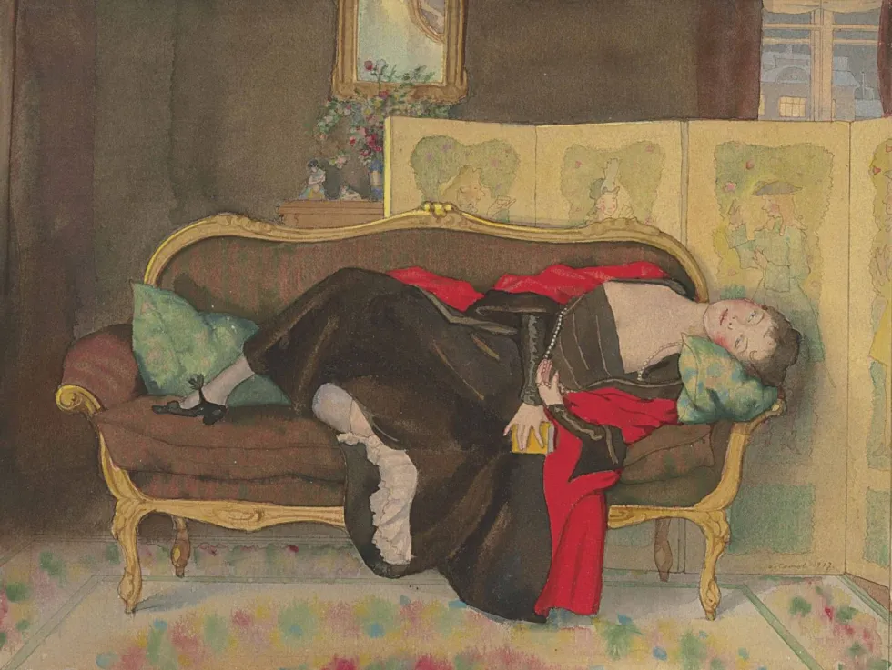
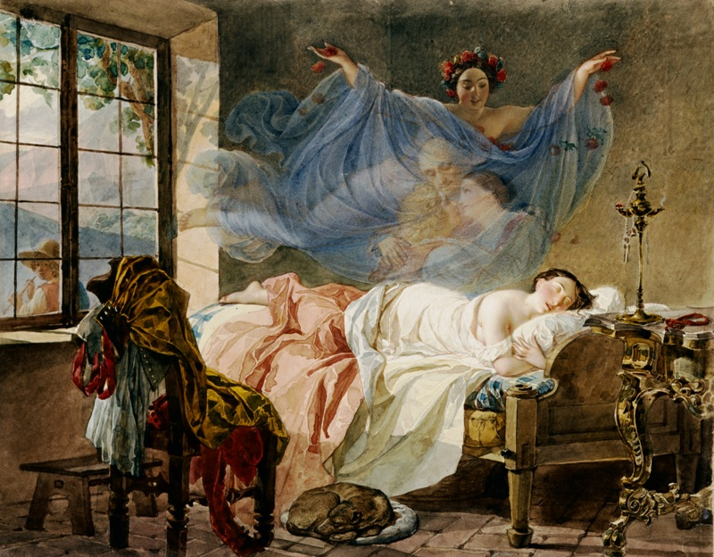

Dreaming

In Leo Tolstoy’s Anna Karenina, the motif of dreaming functions as both a narrative and a structural device through which Tolstoy reveals his characters’ suppressed desires, moral conflicts, and fated destinies (Barran 161). Here, dreaming designates a wide spectrum of altered mental states, including narrated sleep-dreams, half-dreams, recurring nightmares, ominous dreams, delirium, and extends even into stream-of-consciousness, a narrative technique which Tolstoy is arguably among the first to have pioneered (Jackson 156–57). Therefore, the action of dreaming is more than literal nocturnal dreams (snovideniya), as the motif also encompasses the broader verbal action of fantasizing, longing, or constructing illusory visions of the future captured by the Russian verb mechtat, which means to dream idly and fantasize (Morson 135–36). It is through this full range of dreaming states that Tolstoy constructs a moral architecture in which a character’s dreams become an index of their fate (Morson 52–53).
The motif of dreaming appears in its simplest, most benign form in the novel’s opening scene, where Oblonsky wakes from a pleasant dream, even as his household is in turmoil because of his affair. He lingers in the dream’s strange, luxurious imagery — a dinner party where glass tables sing Don Giovanni’s serenade and decanters are women — until a habitual physical gesture brings him back to reality. Reaching automatically for a dressing-gown that is no longer in its usual place, he is forced to remember that he has been banished to his study after his wife discovered his affair with the French governess (Tolstoy 4). First, this moment introduces Stiva as a pleasure-driven, consequence-free man who feels little guilt about his infidelity, establishing him as one pole of the novel’s moral spectrum. More importantly, as Russian-American literary scholar Vladimir Nabokov observes, Stiva’s “light-hearted, transparent, philandering, epicurean nature is cunningly described by the author through the imagery of a dream” (Nabokov 99). By introducing him through a dream rather than his waking life, Tolstoy seeks to teach readers that, in every moment of our waking lives, how we look and direct our attention have moral meanings, because they are so ordinary and form habits (Morson 84–85). If Oblonsky’s dream functions to reflect his character, Anna’s dreams predict her destruction. The most structurally ambitious and prophetically charged use of the dreaming is Anna’s fourth dream, which is a recurring nightmare of a hideous little peasant working at iron and muttering in French, experienced independently by both Anna and Vronsky. This dream, according to Nabokov, is an unconscious accumulation of her conscious impressions that precede the dream (Nabokov 112–13). The process begins at the Moscow station, where a worker is crushed under a train just as Anna and Vronsky first meet. At Anna’s urging, Vronsky gives money to the dead man’s family, making the worker’s death the couple’s first secret bond. Later that night, on Anna’s train ride back to Petersburg, these impressions deepen in a half-waking state where she glimpses a muffled conductor, a stove-heater who appears to gnaw the wall, and, on the station platform, the bent shadow of a man testing iron wheels with a hammer (Nabokov 114). The imagery returns during Anna and Vronsky’s first sexual encounter, which Tolstoy frames in violent, criminal terms: Vronsky “felt what a murderer must feel when he sees the body he has robbed of life” (Nabokov 114). Even erotic passion becomes linked with iron, destruction, and death. A further layer appears in Anna’s recurring vision of the “two Alexeys” — Alexey Alexandrovich and Alexey Vronsky — both transformed into her husbands. Although the dream initially seems “much simpler” and “happy and contented,” it “weighed on her like a nightmare,” from which she wakes in horror (Tolstoy 153). The dream reflects the impossibility of Anna’s situation: she cannot legally become Vronskaya yet cannot escape being Karenina. The nightmare about the peasant thus arrives not as an intrusion but as the completion of a pattern Anna’s unconscious mind has been assembling across the entire first movement of the novel. In that fourth dream, a disheveled peasant bent over a sack, groped in it, muttered Il faut le battre, le fer, le broyer, le pétrir (“It must be beaten, the iron, must be pounded, molded”) (Nabokov 115). While both Anna and Vronsky see the same image, only Anna hears the French words clearly, and Vronsky catches only fragments. This asymmetry reveals that the dream is lodged in her deeper interiority, not his, and that her passion is already “battering,” “crushing,” and “pounding” her own soul out of shape (Nabokov 115). Another horror of this dream comes from the fact that the peasant is speaking French, a language he could not plausibly know because it is used exclusively by Russian aristocrats and is supposed not to be understood by servants. This reversal of social order projects Anna’s helplessness in the face of her social transgression and collapsing reputation — another factor weighing on her in addition to the breakdown of family and her moral conscience. The theory about the prophetic dimension of dreaming is further clarified by the doubling between Anna and Vronsky’s double nightmare and Kitty and Levin’s chalk-letter scene, both of which are a form of uncanny, telepathic communication between a lover pair. Where Kitty and Levin’s shared language opens toward “vistas of tenderness and fond duties and profound bliss,” Anna and Vronsky’s shared dream closes toward destruction (Nabokov 112). The dream last appears on the morning of her final day, when she sees an actual workman stooping near the railway wheels; her waking world and the dream world come full circle (Nabokov 119). She does not decide to die so much as she recognizes the death that the dream has always been describing. In her final moment, the peasant appears one last time alongside the candle, which flares and then extinguishes, fulfilling the whole arc of her dream. In making the dream’s final recurrence the trigger for Anna’s suicide, Tolstoy has truly elevated the motif into a structural device that proactively organizes the arc of the novel around her demise. The richness of the dreaming motif becomes especially legible when Anna’s dreaming is compared with that of other dreamers in European fiction more broadly. Perhaps the strongest literary parallel to Anna is Emma Bovary from Gustave Flaubert’s novel Madame Bovary(1857). Both heroines are voracious Romantic readers who project their literary fantasies onto their conscious life. Yet, they diverge in the nature of their dreams: Emma’s dream is escapist and self-deluding, retreats into romantic fantasy as a refuge from the provincial mediocrity she despises, and this retreat blinds her to the truth of her circumstances, leading her inexorably to ruin (Knapp 125). By contrast, Anna’s dream is truthful and prophetic, foretelling the truth that awaits her doom (Nabokov 95–96). On her way back from the Moscow ball, Anna is reading a novelthat many scholars attribute to the English author Anthony Trollope, whose protagonist is a virtuous wife tempted by adultery and ultimately overcomes it. However, Anna finds herself unable to follow its plot. This failure is a specific form of waking dreaming. The semi-darkness of the train compartment, as Russian literature scholar Robert L. Jackson observes, “mimics a marginal world of consciousness precariously balanced between reality and dream,” and Anna asks herself, “Am I myself or another” (Knapp 151). The phrase Tolstoy uses to describe this moral collapse, “everything was in confusion,” creates a structural rhythm with the chaos in the Oblonsky household that opens the novel. Anna’s inability to follow a story whose moral arc might have guided her thus becomes a prophetic surrender to a fate she cannot outread. This difference, like their dream places, separates the two heroines within separate literary paradigms of the “fallen woman” genre. Anna’s experience is shaped by a Romantic and melodramatic mode of dreaming, in which desire is not an escape from reality but a privileged access to it. Her adultery is thus not lived as a moral fall so much as a surrender to a deeper, dreamlike truth. In this sense, her dreaming is prophetic and truthful, as it strips away illusion even as it draws her toward destruction, and her transgression is, if not justified, then at least ennobled by the faithfulness with which she follows the object of her feelings. Emma, by contrast, inhabits a realist regime of dreaming defined by misperception and imitation. Her consciousness is structured by mechtat in its most escapist form. She veils reality with borrowed, artificial narratives, treating life as a stage upon which to enact prescripted fantasies. Her dreaming is therefore distortive, substituting illusion for perception and rendering her incapable of apprehending the truth of her circumstances. Anna’s hallucination on the train ride home from the Moscow ball parallels Raskolnikov’s nightmare following his murder of the pawnbroker in Fyodor Dostoevsky’s Crime and Punishment (1866), where in both cases, an altered state of consciousness produces a deceptive sense of liberation. Upon waking, Anna exclaims, “Well, that’s all over, thank God!” while Raskolnikov says to himself, “Thank God, it’s only a dream!...Freedom, freedom! He is free from that spell…from the temptation” (Knapp 150). The verbal echo between the two characters invokes gratitude for an imagined deliverance. However, as Jackson writes, in situations “where temptation and moral conflict are concerned, the moment of imagined freedom is often the moment of greatest vulnerability and danger” (Knapp 150–151). Rather than a real release, this deluded dream-state pulls both characters into a false sense of security that erodes the social vigilance demanded of them in their waking life, leaving them more exposed to the problems they believe they have escaped. Taken together, the comparisons with Flaubert’s Madame Bovary and Dostoevsky’s Crime and Punishment confirm that Tolstoy’s use of dreaming in Anna Karenina is just as systematic as other major novels of the 1860s. Dreaming is the novel’s moral and structural spine. It is the device through which fate is foretold, character is revealed, and the distance between illusion and truth is fatally measured.
Works Cited
- Knapp, Liza, and Amy Mandelker. Approaches to Teaching Tolstoy's Anna Karenina. Modern Language Association of America, 2003.
- Morson, Gary Saul. Anna Karenina in Our Time: Seeing More Wisely. Yale University Press, 2008.
- Nabokov, Vladimir, and Fredson Thayer Bowers. Lectures on Russian Literature. Harcourt Brace Jovanovich: Bruccoli Clark, 1981.